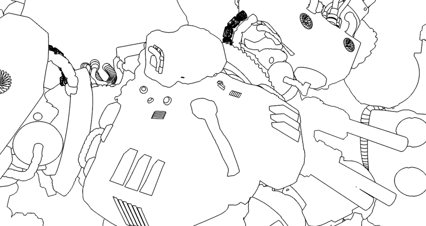

对机甲进行卡通着色
这个简短的制作教程介绍了如何使用卡通*着色器创建上图所示的草图样式。场景使用 *skydome_light 照明，“过滤器”(Filter)已设置为“轮廓”(Contour)以进行“卡通边”(Toon Edge)渲染。
默认卡通着色器
边角度阈值
- 我们现在只关注“边”(Edge)*参数。将 *base_weight 和 specular_weight 减小到 0。将 emission_weight 增大到 1。

- 将 toon.edge_angle_threshold 减小到 20 左右以添加更多细节。
镜面反射和自发光
- 现在我们关注其余着色。将 specular_weight 增加到 0.6 左右，将 emission_weight 增加到 0.3 左右，并使用灰色 emission_color。
遮罩颜色
- 即将完成。现在，让我们尝试向边着色添加更多细节。创建一个工具着色器并将其连接到卡通着色器的边“遮罩颜色”(Mask Color)。将工具着色器的 shade_mode 更改为“金属”(metal)，并将“粗糙度”(roughness)降低到 0.01 左右。但是，现在看起来太多了，因此我们需要降低效果。
边宽度
- 将 toon.edge_width 减小到 0.5 左右，这样就完成了！
尝试在您自己的模型上使用_工具_着色器的不同 shade_modes，从而获得“边”(Edge)参数的不同着色样式。